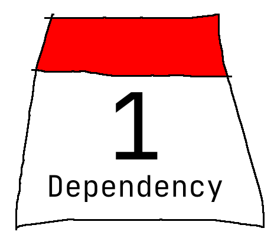
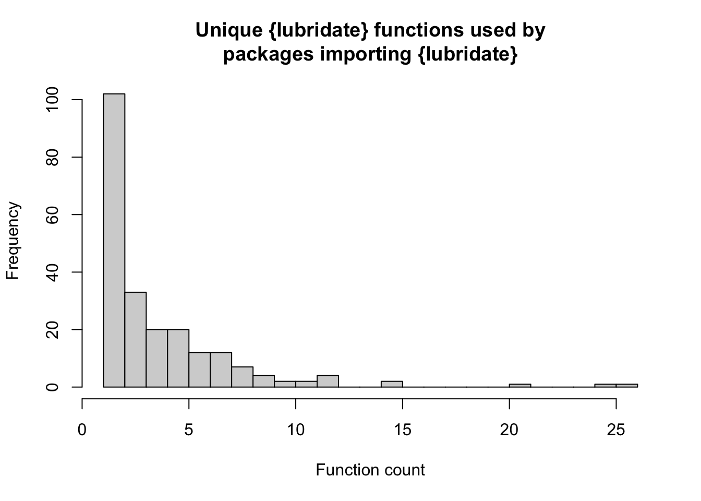
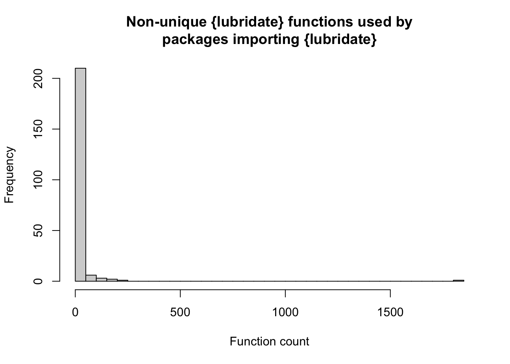

library(dplyr, warn.conflicts = FALSE)
library(tidyr)
library(stringr)
cran <- tools::CRAN_package_db()
imports_lubridate <- cran |>
filter(str_detect(Imports, "lubridate")) |>
pull(Package)
sample(imports_lubridate, 5) # random sample
tl;dr
I used {itdepends} to see how CRAN packages depend on {lubridate}, which was not removed from CRAN recently.
Lubrigate
A test failure in {lubridate} led to hundreds of R developers being emailed about its potential expulsion from CRAN, which also threatened the hundreds of packages that depend on it.
I see the benefit of minimising dependencies. I also understand the drawbacks of reinventing the wheel. Maybe {lubridate} is a good dependency: a simple API, part of the popular {tidyverse}, and it handles stuff you can’t be bothered with (like what’s 29 February plus one year?).
Jim Hester spoke at rstudio::conf(2019) about dependencies. His {itdepends} package helps you understand their scale and impact on your package.1
So, for fun, I’m looking at how {lubridate} is used by packages that import it.
CRANk it up
CRAN_package_db() is a convenient function that returns information about packages available on CRAN. We can filter it for the packages that import {lubridate}, i.e. they have {lubridate} in the Imports section of their DESCRIPTION file.
[1] "quantdates" "GetDFPData2" "esmprep" "strand" "votesmart"Right, so that’s 494 packages out of 18,515 (3%). Is that a lot? Well, the tidyverse package {dplyr}—the Swiss Army knife of data wrangling—is listed in the Imports of 2353 by comparison.
InstALL
So, perhaps this is a little nuts, but we’re going to install all the {lubridate}-dependent packages because {itdepends} works with locally-installed packages.
tmp <- tempdir() # temporary folder
purrr::walk(
imports_lubridate,
~install.packages(
.x,
destdir = tmp,
dependencies = FALSE, # skip installing dependencies
repos = "https://cran.ma.imperial.ac.uk/" # mirror
)
)This takes a little while. There’s probably faster methods, like maybe the {pak} package, but for now I just used what worked. I’ve also hidden the output, obviously. It’s also possible that some packages will error out and won’t install. Oh no! Ah well.
It depends on {itdepends}
{itdepends} is not available from CRAN, but you can install from GitHub.
remotes::install_github("jimhester/itdepends")Now we can pass each of package name to the dep_usage_package() function of {itdepends} in a loop. We get back a dataframe for each package, listing each function call it makes and the package that the function comes from.
I’ve added a mildly unorthodox use of next, borrowed from StackOverflow, because I was having trouble with the loop after a failure.
dep_list <- vector("list", length(imports_lubridate)) |>
setNames(imports_lubridate)
for (i in imports_lubridate) {
skip <- FALSE
tryCatch({
dep_list[[i]] <- itdepends::dep_usage_pkg(i)
dep_list[[i]]$focus <- i
},
error = function(e) {
dep_list[[i]] <- data.frame(
pkg = NA_character_,
fun = NA_character_,
focus = NA_character_
)
skip <<- TRUE
})
if (skip) next
}I absolutely do not claim this to be the best, most optimised approach. But it works for me.
Dependensheeesh
Now that {itdepends} has extracted all the function calls from each of the packages, we can take a look at their frequencies.
Example
Here’s the top 10 most-used functions from the first package alphabetically: {academictwitteR}.
ex_pkg <- "academictwitteR"
dep_list[[ex_pkg]] |>
count(pkg, fun, sort = TRUE) |>
slice(1:5)# A tibble: 5 × 3
pkg fun n
<chr> <chr> <int>
1 base <- 228
2 base { 197
3 base if 109
4 base $ 90
5 base ! 42It’s not particularly exciting to know that the top 5 are made up of base R functions like the assignment arrow (<-), the dollar-sign ($) data accessor2 and the square bracket ([). We also don’t really care about the package’s internal functions. Let’s filter out these packages and re-count
base_pkgs <- sessionInfo()$basePkgs
dep_list[[ex_pkg]] |>
filter(!pkg %in% c(base_pkgs, ex_pkg)) |>
count(pkg, fun, sort = TRUE) |>
slice(1:10)# A tibble: 10 × 3
pkg fun n
<chr> <chr> <int>
1 lifecycle deprecate_soft 16
2 magrittr %>% 14
3 dplyr bind_rows 8
4 dplyr left_join 5
5 dplyr select_if 5
6 httr status_code 4
7 jsonlite read_json 4
8 purrr map_dfr 4
9 tibble tibble 4
10 dplyr distinct 3Aha. We can see immediately that the authors have made use of tidyverse to write their package, since you can see {dplyr}, {tibble}, etc, in there. This makes the use of {lubridate} relatively unsurprising.
Here’s the {lubridate} functions used by this package.
dep_list[[ex_pkg]] |>
filter(pkg == "lubridate") |>
count(pkg, fun, sort = TRUE)# A tibble: 4 × 3
pkg fun n
<chr> <chr> <int>
1 lubridate as_datetime 1
2 lubridate seconds 1
3 lubridate with_tz 1
4 lubridate ymd_hms 1So this package uses four {lubridate} functions for conversion and formatting of datetimes.
All packages
Now let’s take a look at the function calls across all the packages that import {lubridate}. I’m first going to convert the list of results to a dataframe.
dep_df <- do.call(rbind, dep_list)Function use by package
This is a count of the number of uses of each {lubridate} function by each of the the focus packages (i.e. the packages we installed).
pkg_fn_count <- dep_df |>
filter(pkg == "lubridate") |>
count(focus, fun, sort = TRUE)
pkg_fn_count |> slice(1:5)# A tibble: 5 × 3
focus fun n
<chr> <chr> <int>
1 PriceIndices month 1096
2 PriceIndices year 678
3 tidyndr as_date 53
4 RClimacell with_tz 52
5 RobinHood ymd_hms 52Holy moley, the {PriceIndices} package calls month() and year(), used to extract elements of a date, over 1400 times combined.
Unique function use by package
We can also look at things like the packages that make calls to the greatest number of unique {lubridate} functions. Here’s the top 5.
fn_distinct_count <- dep_df |>
filter(pkg == "lubridate") |>
distinct(focus, fun) |>
count(focus, sort = TRUE)
fn_distinct_count |> slice(1:5)# A tibble: 5 × 2
focus n
<chr> <int>
1 photobiology 26
2 mctq 25
3 fmdates 21
4 finbif 15
5 xml2relational 15So these packages are using more than 10 unique functions from {lubridate}, which is pretty extensive usage. It may be tricky to do away with the convenience of the dependnecy in these cases, especially.
Conversely, a quick histogram reveals that a large number of packages are actually using just a single {lubridate} function.
hist(
fn_distinct_count$n,
breaks = 30,
main = "Unique {lubridate} functions used by\npackages importing {lubridate}",
xlab = "Function count"
)
Maybe the dependency could be dropped in these cases?
Out of interest, which {lubridate} function is the most frequent in packages that use just one?
focus_one_fn <- fn_distinct_count |>
filter(n == 1) |>
pull(focus)
pkg_fn_count |>
filter(focus %in% focus_one_fn) |>
count(fun, sort = TRUE) |>
slice(1:5)# A tibble: 5 × 2
fun n
<chr> <int>
1 as_datetime 7
2 as_date 6
3 ymd 6
4 ymd_hms 6
5 is.Date 4Looks like some pretty standard functions, like converting to a date (as_date(), as_datetime()) or to parse dates with a particular time component (ymd_hms for year, month, date, hour, minute, seconds, and ymd()).
I think this is interesting: some packages are importing {lubridate} in its entirety to use a single function. And these functions have base R equivalents with no package-dependency cost. Without diving too deep, this implies that people are using {lubridate} because of syntax familiarity or perhaps because they’re already loading other tidyverse packages anyway.
Non-unique function use by package
What about total calls to {lubridate} functions by each of the dependent package? This is on-unique, so could include one function being called multiple times by a given package.
fn_nondistinct_count <- dep_df |>
filter(pkg == "lubridate") |>
count(focus, sort = TRUE)
dep_df |>
count(focus) |>
left_join(
fn_nondistinct_count,
by = "focus",
suffix = c("_total", "_lub")
) |>
mutate(percent_lub = round(100 * n_lub / n_total, 1)) |>
arrange(desc(percent_lub)) |>
slice(1:5)# A tibble: 5 × 4
focus n_total n_lub percent_lub
<chr> <int> <int> <dbl>
1 RClimacell 2241 225 10
2 riem 113 9 8
3 quantdates 534 42 7.9
4 rtrends 101 8 7.9
5 PriceIndices 23235 1805 7.8Wow, 10% of calls by the {RClimacell} package involve {lubridate} functions. Make sense: this package relates to weather readings at certain time intervals.
And another quick histogram of what the distribution looks like.
hist(
fn_nondistinct_count$n,
breaks = 30,
main = "Non-unique {lubridate} functions used by\npackages importing {lubridate}",
xlab = "Function count"
)
Huh, so the number of non-unique {lubridate} calls is almost always less than 50 per package. Seems in general that a small number of {lubridate} functions are called per dependent package, but they might be called a lot.
You do you
Does the information here imply that many developers could consider removing their small number of {lubridate} calls in favour of date-related base functions? Maybe. That’s up to the developers.
Ultimately, {itdepends} might be a useful tool for you to work out if you need all the dependencies you have. Other tools are out there; I read recently about Ashley Baldry’s {depcheck} package, for example
It might be interesting to redo this investigation for all CRAN packages and their dependencies, but I don’t have a personal CRAN mirror and I don’t write particularly performant code.
Anyway, don’t listen to me: I write joke packages that I don’t put on CRAN, lol.
Environment
Session info
Last rendered: 2023-07-06 20:42:28 BSTR version 4.3.1 (2023-06-16)
Platform: aarch64-apple-darwin20 (64-bit)
Running under: macOS Ventura 13.2.1
Matrix products: default
BLAS: /Library/Frameworks/R.framework/Versions/4.3-arm64/Resources/lib/libRblas.0.dylib
LAPACK: /Library/Frameworks/R.framework/Versions/4.3-arm64/Resources/lib/libRlapack.dylib; LAPACK version 3.11.0
locale:
[1] en_US.UTF-8/en_US.UTF-8/en_US.UTF-8/C/en_US.UTF-8/en_US.UTF-8
time zone: Europe/London
tzcode source: internal
attached base packages:
[1] stats graphics grDevices utils datasets methods base
loaded via a namespace (and not attached):
[1] htmlwidgets_1.6.2 compiler_4.3.1 fastmap_1.1.1 cli_3.6.1
[5] tools_4.3.1 htmltools_0.5.5 rstudioapi_0.14 yaml_2.3.7
[9] rmarkdown_2.23 knitr_1.43.1 jsonlite_1.8.7 xfun_0.39
[13] digest_0.6.31 rlang_1.1.1 evaluate_0.21 Reuse
CC BY-NC-SA 4.0